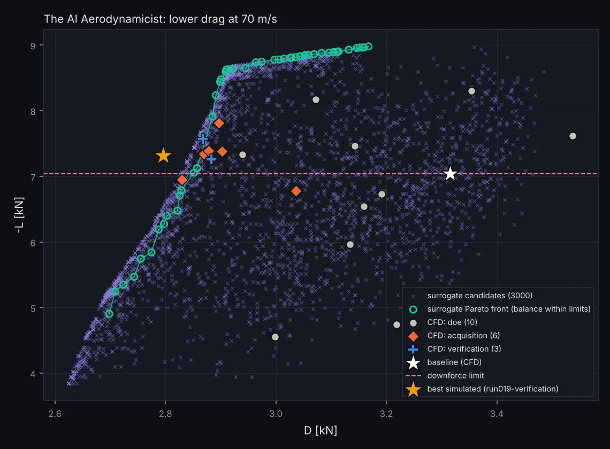

Optimizing with CFD is easy to describe and expensive to do: every evaluation costs hours of solver time. The problem stops being the algorithm and becomes the question almost nobody spends time answering: which case is worth simulating next?
What the platform did on its own
The case is a parametric racing car, with wings, ride height and diffuser angle, at 70 m/s. The mission took three objectives at once: lower drag, keep downforce above 7 kN, keep the front aero balance inside its band. The budget: 20 runs of 3D OpenFOAM.
Every round the surrogate is retrained, NSGA-II proposes the candidates, and each candidate gets a verdict before any solver time is spent: favourable, uncertain or out of domain. Only what is worth it becomes a new case, and the criterion is the model's own uncertainty.

The number
−15.7% drag against the baseline, with downforce above the 7 kN floor and the balance inside its band, over 20 runs summing 3.3 hours of solver time (four cores) and no failures.
The same design, run on the fine mesh, gives −13.9%. That is the honest number: the campaign mesh under-predicts downforce by 8.4% and, with it, flatters the gain a little.

Why this matters more than the number
A 15.7% gain depends on how many simulations you can pay for, and the cost here is measured: 20 evaluations, three and a half hours, each chosen for a recorded reason. An engineer with the same budget would get far; the difference is that here the report states where the surrogate was extrapolating and why that run was bought.